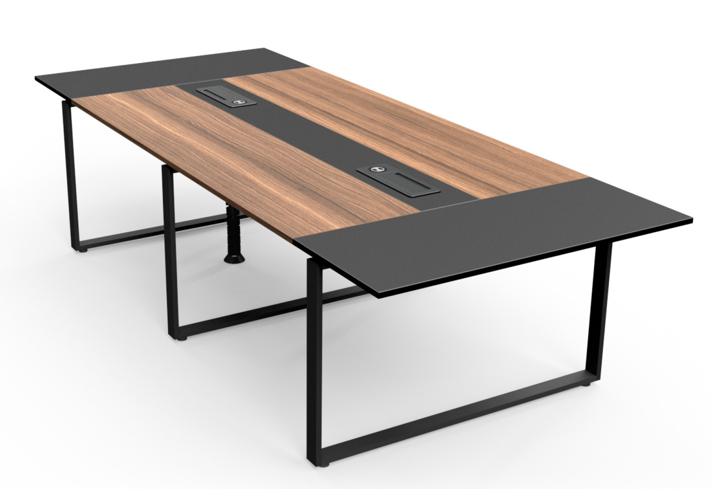
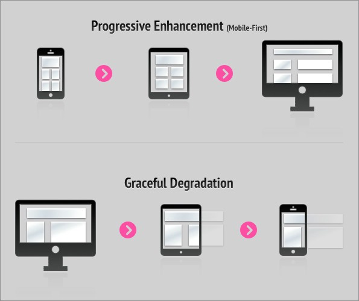

Wat is het?
Progressive Enhancement (PE) is een strategie die je kan inzetten voor webdesign. De kern van deze strategie, is het bouwen van websites met een sterke basis. Bij deze strategie wordt er gefocust op de content. Op deze manier heeft elke gebruiker, met elke soort browser of kwaliteit van internetverbinding, toegang tot de basisinhoud en alle functionaliteiten van een webpagina. Er is dan ook een verbeterde versie van deze webpagina, die beschikbaar is voor gebruikers met betere browsersoftware of een snellere verbinding. Hoever deze verbeterde versie wordt uitgebreid maakt dus in principe niks uit, als die sterke basis maar aanwezig is. Zo hangen er geen functionaliteiten af van die verbeterde versie.
Waarom wordt het gebruikt?
Er zijn meerdere voordelen te noemen van het gebruik van PE. Zoals ik al zei richt je je met PE op een sterke fundering. Je kan er zo voor zorgen dat je complexe functionaliteiten kan bouwen, zonder dat je je zorgen hoeft te maken over de basis. Als je die sterke basis overslaat en je maakt een complexe functionaliteit, kan je er later bijvoorbeeld achter komen dat deze niet op alle browsers werkt. Doordat je dit soort ongein niet zo snel zal tegenkomen als je PE gebruikt, wordt de onderhoud van de website een stuk beter.
Metafoor
Er zijn genoeg alledaagse metaforen waarin Progressive Enhancement wordt gebruikt. Een voorbeeld is een elektrische sta tafel, die ook op de HvA aanwezig zijn. Hierin zijn er ook meerdere lagen gekomen op een sterke basis. Hieronder gaan we aan de hand van dit metafoor uitleggen wat de verschillende lagen zijn.
De verschillende lagen
HTML
De eerste laag is schone, semantisch correcte HTML. Hierbij worden de juiste HTML tags gebruikt voor de juiste content en wordt er gezorgd dat alle inhoud wordt ingeladen via normale hyperlinks, zodat alle inhoud die moet worden ingeladen, ook werkt als de CSS en Javascript uit staat. Deze laag moet dus zorgen voor de sterke basis. Je elektrische tafel kan dus bijvoorbeeld wel omhoog en omlaag gaan, maar als de tafel zelf van slap hout is gemaakt, heb je ook niet veel aan de extra functionaliteit.
CSS
De tweede laag is CSS. Hiermee kan de visuele weergave van de inhoud van een website worden aangepast en verbeterd. De scheiding van websites in de drie lagen betekent dat de webontwerpen toegankelijk en bruikbaar moeten zijn voor iedere browser. Het is ook mogelijk om inhoud toe te voegen via CSS, maar dit is dus geen goede gewoonte omdat je je hiermee niet aan PE houdt. Een uitzondering is als deze inhoud niet essentieel is voor het HTML-document en bijvoorbeeld wordt gebruikt als styling. Zoals bij de elektrische sta tafel, kan je een extra laag toevoegen aan de sterke basis, zoals de stopcontacten die er in de tafels zitten.
JavaScript
De derde laag is Javascript. Hiermee kan het gedrag van de websites worden bepaald en aangepast, waardoor er een verbeterde gebruikservaring kan worden geboden. Hierdoor kunnen dus complexe functionaliteiten worden toegevoegd aan een website, als extra laag op die sterke basis. Bij de elektrische sta tafel, is dus de mogelijkheid om de tafel omhoog en omlaag te laten gaan, weer een extra laag bovenop die sterke basis.
Voorbeelden van progressive enhancement
Hieronder zijn een aantal voorbeelden van progressive enhancement opgesomd:
Web fonts
Het is erg leuk om mooie lettertypes te gebruiken op websites. Als de gebruiker zich echter op een traag netwerk bevindt en veel inhoud moet laden, komt het de performance niet ten goede. In dat geval moet er teruggevallen kunnen worden op het systeemlettertype. Het belangrijkste is namelijk dat de inhoud van een website zonder problemen weergegeven kan worden.
HTML als basis
Veel websites gebruiken scripts om hun content te laden. Dit is vanuit progressive enhancement oogpunt geen goed idee. Wanneer de basiscontent van een website doormiddel van scripts geladen wordt en er gaat iets mis met het ophalen of interpreteren van de scripts, krijgt de gebruiker slechts een lege pagina te zien. Daarom is het beter om de basiscontent direct vanuit de HTML te laden in plaats van het gebruiken van scripts.
Feature detectie
Wanneer je een website ontwikkelt en met JavaScript een gave nieuwe functie wil inbouwen, controleer dan of deze functie beschikbaar is in de browser waarin je aan het ontwikkelen bent. Als blijkt dat deze met JavaScript gemaakte functie in een bepaalde browser niet werkt, zorg er dan voor dat de website niet 'stuk' gaat als je op die browser jouw website gaat gebruiken. Om te checken of een functie wel of niet werkt in een bepaalde browser, kun je Modernizr gebruiken. Dit is een JavaScript-bibliotheek die detecteert welke functies beschikbaar zijn in de browser van een gebruiker. Op deze manier kun je voorkomen dat je extra onbruikbare scripts inlaadt.
Wat is het verschil tussen progressive enhancement en graceful degradation?
Nu we gezien hebben wat progressive enhancement betekent, is het tijd om te kijken naar het begrip 'graceful degradation'. Bij graceful degradation wordt in feite het omgekeerde pad van webontwikkeling bewandeld. Hierbij worden er 'mooie' websites gebouwd en getest met de nieuwste en meest geavanceerde webbrowsers. Hierbij wordt er veel minder aandacht besteed aan de basis, namelijk het toegankelijk maken van content van websites voor oudere en minder geschikte browsers. Er wordt vaak pas nadat de website gebouwd is een paar testen gedaan met oudere browsers. Er worden wellicht wat aanpassingen gedaan maar vaak worden er ook belangrijke aanpassingen vergeten. Hierdoor kunnen gebruikers met oudere browsers de inhoud niet of zeer moeilijk lezen en kunnen formulieren wellicht niet goed worden ingevuld en verstuurd.
Hieronder is het fenomeen responsiveness gebruikt als voorbeeld om het verschil met progressive enhancement en graceful degradation aan te tonen:
Je ziet dat bij progressive enhancement ontwikkeld is met een klein mobile device als uitgangspunt. Er wordt dus met 'slechtere' omstandigheden omgegaan en het belangrijkste is dat de content wordt getoond. Naarmate het ontwikkelproces vordert, wordt er gekeken op welke manier de informatie op een 'betere' manier wordt getoond op een groot scherm. Bij graceful degradation is er juist ontwikkeld onder de 'beste' omstandigheden, namelijk in dit geval een groot scherm. Vervolgens is er geen rekening gehouden met kleinere schermen.